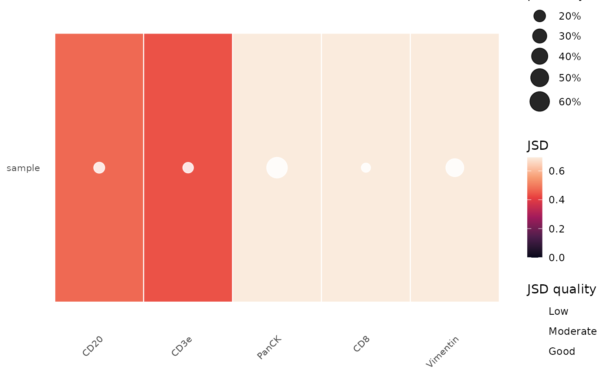
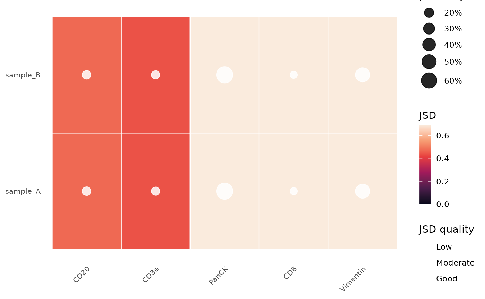

QC heatmap of Jensen-Shannon Divergence across markers and samples
Source:R/plot_utils.R
plot_jsd_heatmap.RdDisplays the per-marker JSD quality metric as a clustered heatmap,
optionally annotated with the proportion of the signal GMM component.
Accepts a named list of BgnormResult objects (single sample),
a named list of such lists (multiple samples), or a
SummarizedExperiment /
SpatialExperiment with bgnorm results in
metadata(results)$bgnorm_results.
Usage
plot_jsd_heatmap(
results,
cluster_rows = TRUE,
cluster_cols = TRUE,
show_tissue_positivity = TRUE
)Arguments
- results
A named list of
BgnormResultobjects (single sample), a named list of such lists (multiple samples), a named list ofQPTIFFImageobjects returned bybgnorm_pixels(one per sample; all must share the same channel names), a singleQPTIFFImage, or aSummarizedExperiment/SpatialExperiment.- cluster_rows
Logical; cluster samples (rows)? Default
TRUE.- cluster_cols
Logical; cluster markers (columns)? Default
TRUE.- show_tissue_positivity
Logical; overlay tissue positivity as circles on the heatmap? Circle area is proportional to the tissue positivity (\(\pi_3 / (\pi_2 + \pi_3)\) for three-component models; \(\pi_2\) for two-component models). Circle colour indicates JSD quality: red (JSD < 0.1, low), orange (0.1-0.2, moderate), white (\(\geq\) 0.2, good). Default
TRUE.
Examples
path <- system.file("extdata", "PA_HNC_sample.qptiff", package = "bgnormR")
img <- read_qptiff(path)
#> Reading TIFF directory structure ...
#> Reading IFD page layouts ...
#> Loading 5 channel(s) ...
res <- bgnorm_pixels(img, sample_prop = 0.1)
plot_jsd_heatmap(res)

# Multi-sample comparison (pass a named list)
plot_jsd_heatmap(list(sample_A = res, sample_B = res))
